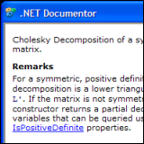
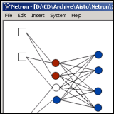
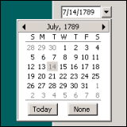
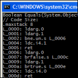

Tools and source code for .NET and C#:

|
Reflector for .NET
Reflector is a class browser for .NET components and assemblies.
It features hierarchical assembly and namespace views, type and member
dictionary index search, type reference search, custom attributes view,
an IL disassembler and viewers for C# XML documentations and MSDN help.
Assembly dependency trees, supertype/subtype hierarchies and resources can be
inspected as well. Function prototypes are displayed in C#, VB and Eiffel syntax.
Windows XP enabled.
reflector.zip - .NET Reflector executable
|
|
CommandBar for .NET
The CommandBar class library extends System.Windows.Forms with classes for
CommandBar, ReBar, CoolBar, and bitmaped menu controls.
A unified command item representation is provided which makes it
easy to switch the rendering between Menu, ToolBar and ContextMenu.
24 bit alpha channel images are supported on both Windows XP and Windows 2000
to make consistent use of the new Luna look and feel. An example including
the 16x16 are 24x24 shell explorer icons is included.
commandbar.zip - Class Library for .NET + C# source code
|

|

|
Resourcer for .NET
Resourcer is an editor for .resources binaries and .resX XML file formats
used with the Microsoft.NET platform.
The program is written in C# and allows the integration of bitmaps,
icons and text strings into resource packages.
Resourcer allows editing of name/string pairs, import of various kinds of data
formats (bitmaps, icons, etc) and merging of resources from different
sources. Viewers for bitmaps, icons and cursor images are included.
The source code is available in a separate archive.
resourcer.zip - Executable for .NET
|
|
Mapack for .NET
Mapack is a .NET class library for basic linear algebra computations.
It supports Norm1, Norm2, Frobenius Norm, Determinant,
Infinity Norm, Rank, Condition, Trace, Cholesky, LU, QR, single value decomposition,
least squares solver and eigenproblems.
mapack.zip - Class Library for .NET + C# source code
|

|
|

|
Documentor for .NET
Documentor is a utility for editing XML documentation snippets before adding them to your C# source files.
The program provides a window for entering the XML source text and shows the corresponding HTML output on the fly.
Documentor is useful if you spend a lot of time correcting markup syntax errors in XML documentation and
often need to walk through multiple compiler cycles to correct details in the source.
documentor.zip - Executable for .NET
|
|
Digger for .NET
.NET version of a Boulderdash game.
digger.zip - Executable for .NET
|

|
|

|
Netron for .NET
Netron is a visual object/component composition tool. Data is send through connection-links that the user establishes between connectors.
The program can be extended with add-ons implemented as C# classes that can be plugged together to compose object graphs.
netron.zip - Prototype for Microsoft .NET + C# source code.
|
|
DatePicker for .NET
DatePicker is a .NET implementation of the Microsoft Oulook drop-down calendar control.
The control handles the DateTime.Empty state as None-selection.
DatePicker supports a quick popup for month and year selection
and highlights the current date.
datepicker.zip - Class Library for .NET + C# source code.
|

|
|

|
Managed Reflection IL Reader for .NET
A class library that extends the existing System.Reflection API
with functions for accessing the IL bytecode from the corresponding Module file.
ilreader.zip - Class Library for .NET.
|
|